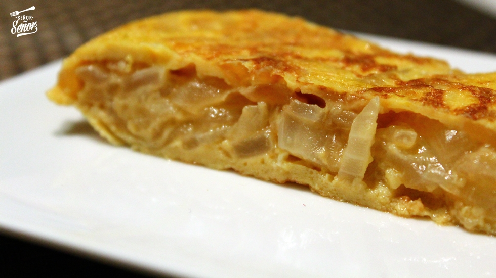

Tortilla de cebolla
Receta de tortilla de cebolla.

Ingredientes
- 2 cebollas grandes
- 4 huevos
- Sal y pimienta
- Aceite de oliva
Elaboración (Pasos)
- Picamos la cebolla en juliana fina del mismo tamaño. En una sartén amplia, vertemos aceite de oliva virgen extra y calentamos.
- Añadimos la cebolla, salpimentamos al gusto, y dejamos que poche todo junto a fuego medio 15 minutos.
- Una vez se ha pochada toda la cebolla, sin que se queme, la sacamos y la ponemos en un bol. Podéis ayudaros de una espumadera y un colador para evitar añadir más aceite a la tortilla. Reservamos.
- Batimos los huevos y los salamos ligeramente (una pizca bastará). Añadimos la cebolla pochada y mezclamos muy bien.
- Calentamos una sartén antiadherente a fuego medio y agregamos unas gotas de aceite de oliva virgen extra.
- Echamos la mezcla a la sartén y dejamos que se vaya cuajando a fuego medio. La cocinamos por ambos lados y la retiramos cuando adquiera el punto que más nos guste, más o menos cuajada. Mi recomendación es que no la paséis demasiado, se disfruta más de ella si está bien tierna.
- Con cuidado, la pasamos a un plato o fuente y está lista para degustar. Podéis acompañarla de la ensalada que más os apetezca, por ejemplo una ensalada de tomate. De rechupete, os lo aseguro.
Index